ClinicusMed · Ovário, Trompa Uterina, Útero, Vagina e Vulva · Ficha Padronizada
O Sistema Genital Feminino integra órgãos genitais internos (2 ovários, 2 trompas uterinas, útero e vagina) e órgãos genitais externos (vulva e seus anexos). Os ovários são as glândulas sexuais (secreção endócrina + exócrina — ovócitos); as trompas uterinas conduzem o ovócito até a cavidade uterina; o útero recebe o ovo fecundado e aloja o feto durante a gestação; a vagina liga o útero à vulva. Essa ficha usa diagramas da cátedra com ênfase visual máxima, já que é uma matéria essencialmente de reconhecimento de imagem.
Ao final dessa ficha, você será capaz de descrever a situação, descrição e meios de fixação do ovário e seus 4 ligamentos; descrever as 4 porções da trompa uterina e seu trajeto; descrever a configuração externa e interna do útero (corpo, istmo, colo) e suas 3 camadas (endométrio, miométrio, perimétrio); identificar o ligamento largo e suas relações; descrever a vagina e suas relações anteriores/posteriores; e reconhecer as formações da vulva (monte do púbis, labios maiores e menores, hímen, clitóris, bulbos do vestíbulo e glândulas de Skene, Bartolino e Huguier).
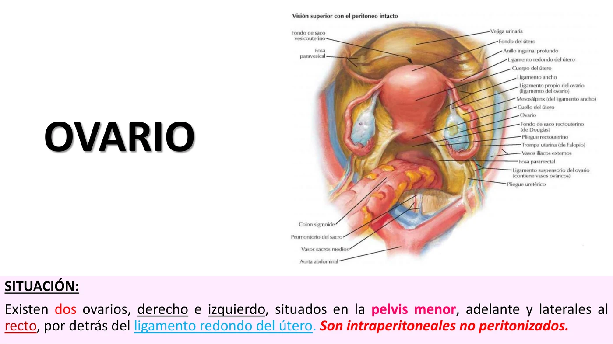
É a glândula sexual feminina: por secreção endócrina assegura os caracteres sexuais femininos, e por secreção exócrina produz ovócitos primários e secundários (gametas femininos). Existem 2 ovários (direito e esquerdo), situados na pelve menor, adiante e laterais ao reto, por detrás do ligamento redondo do útero. São intraperitoneais não peritonizados (não revestidos por peritônio).
| Característica | Descrição |
|---|---|
| Forma | Ovoide, algo achatada |
| Dimensões | 2,5–4,5 cm de comprimento; 0,5–1 cm de espessura |
| 2 faces | Lateral e medial |
| 2 bordas | Borda livre (posterior) e borda mesoovárica (anterior, hilar) |
| 2 extremidades | Superior (tubárica) e inferior (uterina) |
| Cor | Branco-rosado |
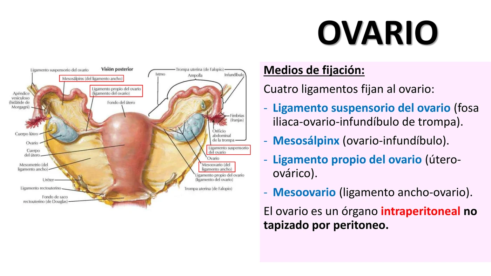
Quatro ligamentos fixam o ovário:
| Ligamento | Trajeto |
|---|---|
| Ligamento suspensório do ovário | Fossa ilíaca → ovário → infundíbulo da trompa |
| Mesosalpinge | Ovário → infundíbulo |
| Ligamento próprio do ovário | Útero → ovário |
| Mesoovário | Ligamento largo → ovário |
Lateralmente, o ovário relaciona-se com a pelve menor na altura da fossa ovárica (de Krause), limitada:
| Limite | Estrutura |
|---|---|
| Posterior | Vasos ilíacos internos e ureter |
| Anterior | Inserção parietal do ligamento largo |
| Superior | Vasos ilíacos externos |
| Inferior | Vasos umbilicais |
A área dessa fossa é atravessada pelo nervo obturador. Medialmente, o ovário é cobertо pelo infundíbulo da trompa uterina e mesosalpinge. Adiante relaciona-se com o hilo do ovário e o ligamento largo; atrás é livre, relacionando-se com o reto; e abaixo, com o fundo do saco retouterino (de Douglas).
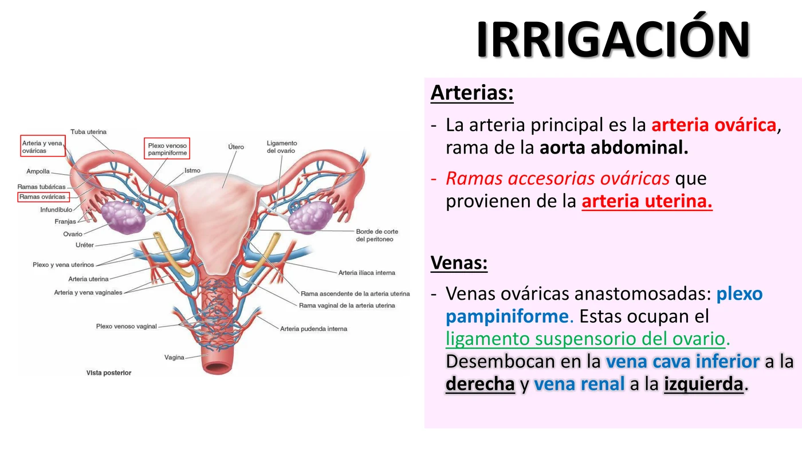
| Vaso | Origem / Destino |
|---|---|
| Artéria ovárica (principal) | Ramo da aorta abdominal |
| Ramos acessórios ováricos | Provêm da artéria uterina |
| Veias ováricas | Anastomosadas em plexo pampiniforme, no ligamento suspensório |
| Drenagem venosa | Direita → veia cava inferior · Esquerda → veia renal |
Inervação: plexo ovárico, com ramos provenientes do plexo mesentérico superior e do plexo renal — nervos vasomotores e também sensitivos nas dores ovarianas.
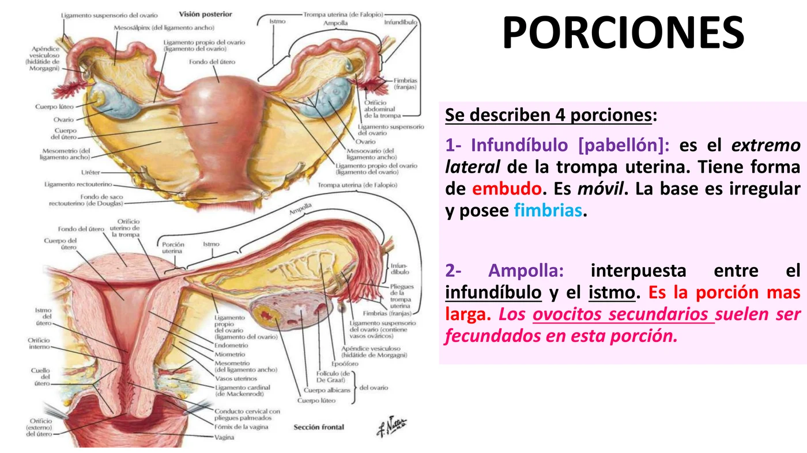
Também chamada trompa de Falópio, é um conduto bilateral, estendido desde a extremidade tubárica do ovário até o corno do útero. É um conduto muscular, revestido por mucosa, que conduz o ovócito até a cavidade uterina. Mede 10–12 cm, tem forma de cilindro oco com uma extremidade dilatada, e direção lateral→medial.
| Porção | Características |
|---|---|
| 1. Infundíbulo (pavilhão) | Extremidade lateral, forma de funil, móvel, base irregular com fímbrias |
| 2. Ampola | Entre infundíbulo e istmo; porção mais longa; local habitual de fecundação do ovócito secundário |
| 3. Istmo | Terço medial; parte menos móvel |
| 4. Uterina (intramural) | Alojada dentro da parede do útero no corno; abre-se na cavidade uterina pelo óstio uterino da trompa |
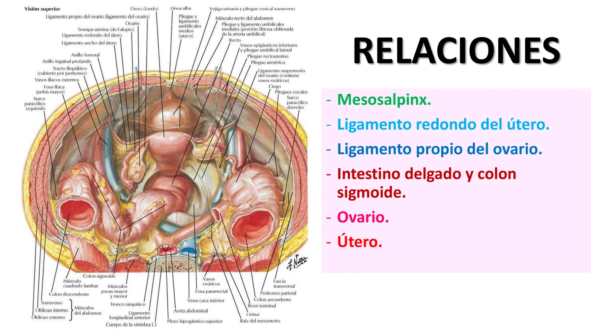
A trompa uterina está contida no ligamento largo e é envolvida pelo peritônio, cujas duas folhas (anterior e posterior) constituem o mesosalpinge. Relaciona-se com o mesosalpinge, ligamento redondo do útero, ligamento próprio do ovário, intestino delgado e colo sigmoide, o ovário e o útero.
| Origem arterial | Território |
|---|---|
| Superolateral — ramos tubários laterais | Ramos da artéria ovárica |
| Medial — ramo tubário medial | Ramo da artéria uterina |
As duas artérias alcançam a trompa pelas suas duas extremidades. Inervação: parassimpática pelo nervo esplâncnico pélvico; simpática pelo plexo uterovaginal.
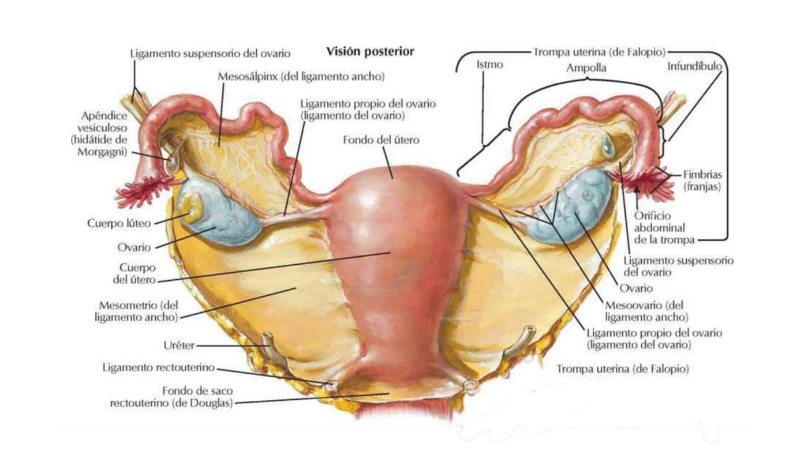
Essa visão integra os 3 órgãos: o ovário fixado pelo ligamento próprio (ao útero) e pelo mesoovário (ao ligamento largo); a trompa uterina correndo do infundíbulo (próximo ao ovário) até sua inserção no corno uterino; e o corno do útero recebendo a porção intramural da trompa.
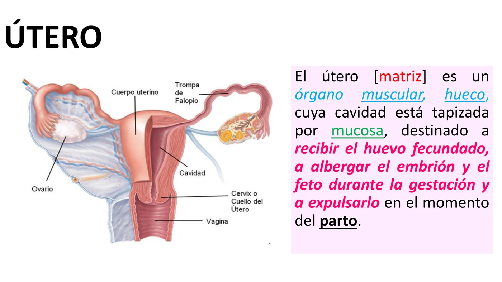
O útero (matriz) é um órgão muscular, oco, cuja cavidade é revestida por mucosa, destinado a receber o ovo fecundado, alojar o embrião/feto durante a gestação e expulsá-lo no parto. Tem forma de cone aplanado de frente para trás, com a base para cima e o vértice encaixado na parte superior da face anterior da vagina.
| Porção | Características |
|---|---|
| Corpo do útero | Parte superior, voluminosa |
| Istmo uterino | Porção intermediária, ~1 cm, sem limites claros |
| Colo (cérvix) | Parte inferior, mais curta e quase cilíndrica |
O corpo uterino apresenta: face vesical (anterior), face intestinal (posterior), fundo do útero (borda superior, parte mais larga) e 2 bordas laterais (onde penetram os vasos uterinos). O colo tem uma porção supravaginal e uma vaginal (a única visível externamente), com o orifício externo do útero no vértice; é separado das paredes vaginais pelo fórnix da vagina.
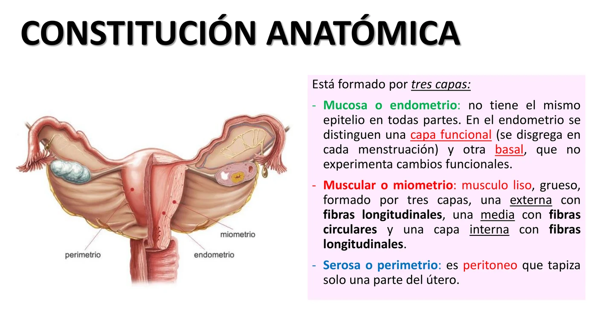
| Camada | Características |
|---|---|
| Mucosa (endométrio) | Epitélio variável por região; tem camada funcional (descama a cada menstruação) e camada basal (não sofre alterações funcionais) |
| Muscular (miométrio) | Músculo liso espesso, 3 subcamadas: externa (fibras longitudinais), média (fibras circulares) e interna (fibras longitudinais) |
| Serosa (perimétrio) | Peritônio que reveste apenas parte do útero |
O peritônio adere ao útero no fundo do saco retouterino (de Douglas), na face vesical e na face intestinal do corpo uterino; no istmo só o revesте atrás. É intraperitoneal no corpo; a partir do colo torna-se subperitoneal. Esse peritônio forma o ligamento largo do útero.
Meios de fixação do útero: o peritônio, os ligamentos redondos e retouterinos, a inserção vaginal, e o assoalho pélvico.
| Relações extravaginais | Relações intravaginais |
|---|---|
| Alças delgadas ou colo sigmoide | Parede posterior da vagina |
| Vesícula urinária, ureter e saco vesicouterino | Fórnix da vagina |
| Reto, via fundo do saco retouterino | Septo vesicovaginal |
| Ligamento largo | Reto |
| Trompa uterina | Vasos vaginais e vesicais no ligamento largo |
| Vasos uterinos | — |
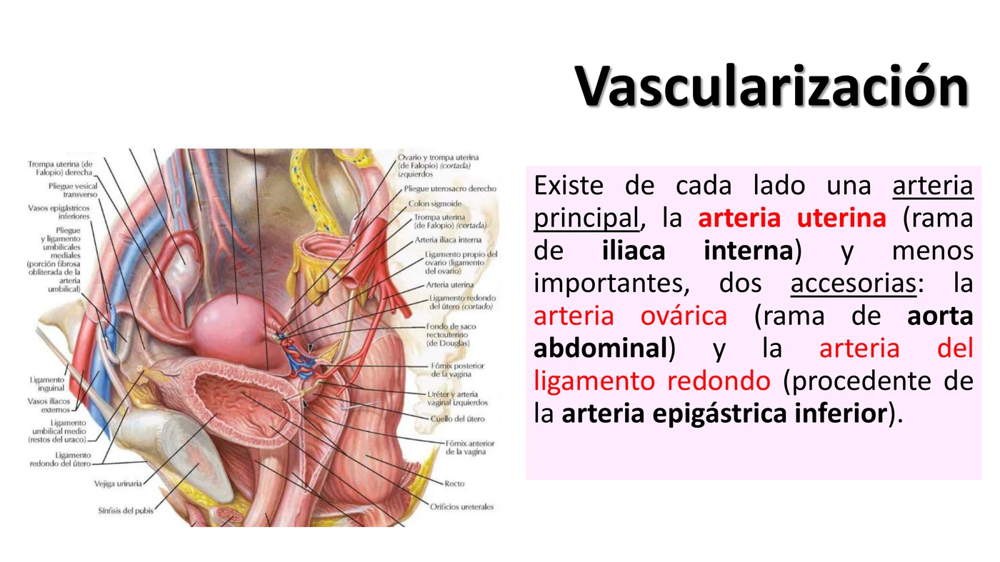
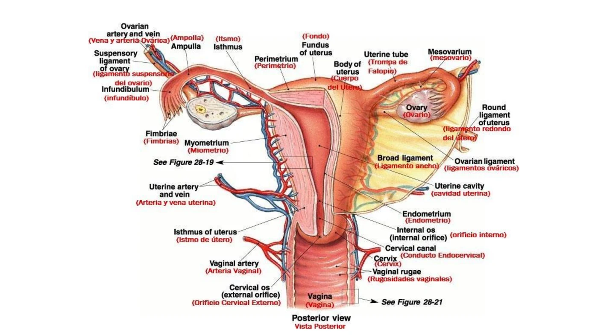
| Artéria | Origem |
|---|---|
| Artéria uterina (principal, de cada lado) | Ramo da ilíaca interna |
| Artéria ovárica (acessória) | Ramo da aorta abdominal |
| Artéria do ligamento redondo (acessória) | Ramo da artéria epigástrica inferior |
Inervação: sistema nervoso autônomo, via nervos esplâncnicos pélvicos; também recebe ramos do plexo uterovaginal, originado do plexo hipogástrico inferior.
É uma formação peritoneal, bilateral, que conecta o útero e seus anexos (ovário, trompa) às paredes da pelve menor. É formado pelas 2 folhas do peritônio e tecido conectivo entre elas. Tem 3 bordas (medial, lateral e superior) e 2 faces (anterior e posterior), além de uma base.
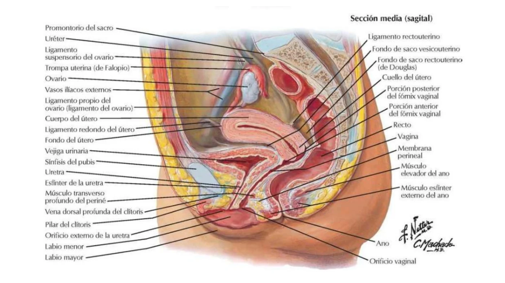
Esse corte sagital integra todos os órgãos pélvicos: vesícula urinária (anterior), útero e vagina (centro) e reto (posterior) — com o fundo do saco retouterino (de Douglas) entre o útero e o reto, o ponto mais baixo da cavidade peritoneal feminina em posição ortostática.
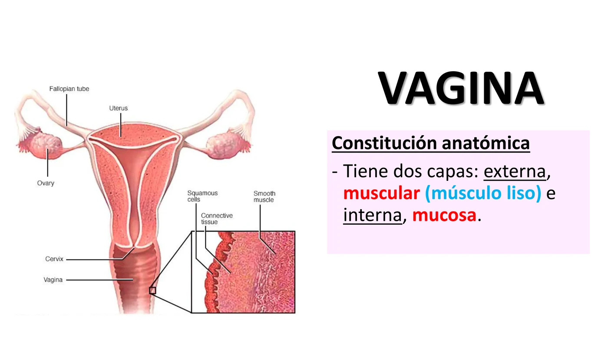
É um órgão musculomembranoso que vai do útero até a vulva. É ímpar, mediano, situado na cavidade pélvica (acima) e no períneo (abaixo). Direção oblíqua para baixo e para frente. Comprimento varia com a idade — 8 cm na vida adulta. A parede posterior é mais longa que a anterior.
Configuração interna: extremidade inferior abre-se na vulva pelo orifício vaginal (pode estar reduzido pelo hímen); interior revestido por mucosa, marcada por pregas transversais e elevada pela carina uretral da vagina; extremidade superior — a parede e mucosa refletem-se sobre o fórnix vaginal, relacionando-se com o orifício externo do útero.
Constituição anatômica: 2 camadas — externa muscular (músculo liso) e interna mucosa.
| Relações anteriores | Relações posteriores |
|---|---|
| Fundo da vesícula, trígono vesical e septo vesicovaginal | Reto e fundo do saco retouterino |
| Colo vesical e uretra com seu esfíncter externo | Septo retovaginal |
| Septo uretrovaginal | — |
Vascularização: artéria vaginal, ramo da ilíaca interna e da artéria uterina (via seus ramos vaginais). Inervação: sistema nervoso autônomo via nervos esplâncnicos pélvicos; também ramos do plexo uterovaginal (do plexo hipogástrico inferior).
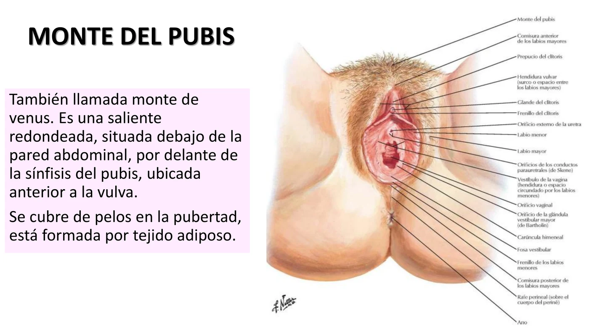
Designa-se vulva o conjunto dos órgãos genitais externos da mulher, situados abaixo da parede abdominal anterior, no períneo anterior (região urogenital), adiante do ânus, por dentro e acima da face medial das coxas. A vulva (pudendum femininum) é coroada pelo monte do púbis e inclui as formações labiais, entre as quais se abrem a uretra e a vagina, além de um aparelho erétil e glândulas anexas.
Monte do púbis (monte de Venus): saliência arredondada, situada abaixo da parede abdominal, adiante da sínfise pubiana, anterior à vulva; cobre-se de pelos na puberdade; formada por tecido adiposo.
Formações labiais: lábios maiores e menores, em número de 4 (2 de cada lado).
| Estrutura | Descrição |
|---|---|
| Lábio maior | Prega cutânea alongada; face lateral e medial; a hendidura vulvar fica entre os lábios maiores, e o sulco interlabial entre maiores e menores; unem-se nas comissuras anterior e posterior (atrás da fossa vestibular); pele da face medial com glândulas sebáceas |
| Lábio menor (ninfa) | Prega cutaneomucosa, medial ao lábio maior, envolvendo o vestíbulo da vagina; extremidade anterior se divide em 2 folhas: posterior (frênulo do clitóris) e anterior (prepúcio do clitóris) |
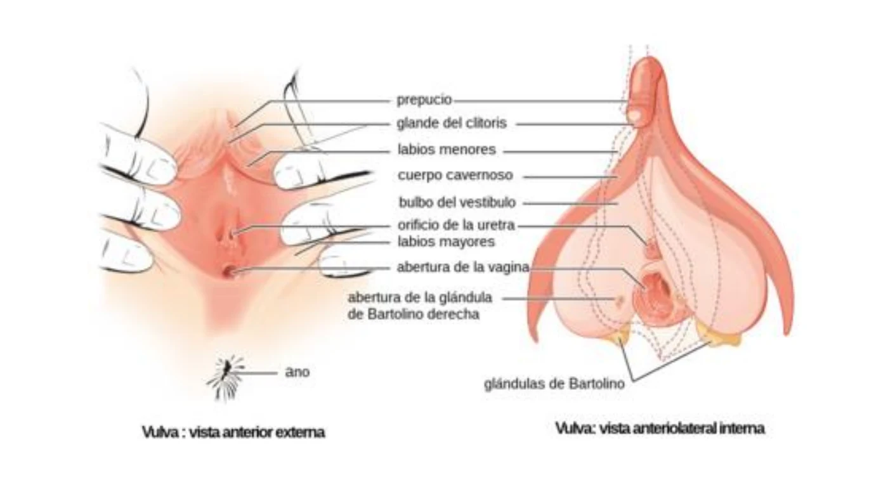
Hendidura vulvar: aparece quando se separam os lábios maiores; dentro dela encontram-se os lábios menores; na parte anterior está o clitóris; abaixo observa-se o orifício externo da uretra e, mais abaixo, o orifício vaginal.
Hímen: prega cutaneomucosa, cuja concavidade se dirige para o orifício da vagina, estreitando-o. É um septo incompleto que separa os espaços vaginal e vulvar. Apresenta 2 faces (interna e externa) e 2 bordas (livre e aderente).
Clitóris: órgão erétil feminino; aparece como elevação submucosa acima do vestíbulo (glande do clitóris), correspondendo à extremidade anterior dos seus corpos cavernosos. Formado por tecido erétil; possui extrema sensibilidade.
Bulbos do vestíbulo: formações eréteis bilaterais; ocupam a borda aderente dos lábios; suas bordas mediais limitam o orifício vaginal e o orifício externo da uretra; adiante, seus extremos mediais unem-se perto do clitóris, formando a comissura dos bulbos.
| Glândula | Localização e função |
|---|---|
| Uretrais e parauretrais (de Skene) | Aos lados da uretra; porção superior desemboca na luz uretral; porção inferior desemboca em 2 orifícios atrás do orifício externo da uretra |
| Vestibulares maiores (vulvovaginais de Bartolino) | Forma de amêndoa, uma de cada lado, posterolateral ao orifício vaginal; ductos abrem-se na base dos lábios menores, contra o hímen; secretam líquido lubrificante no estímulo sexual |
| Vestibulares menores (de Huguier) | Pequenas glândulas mucosas do revestimento do vestíbulo da vagina |
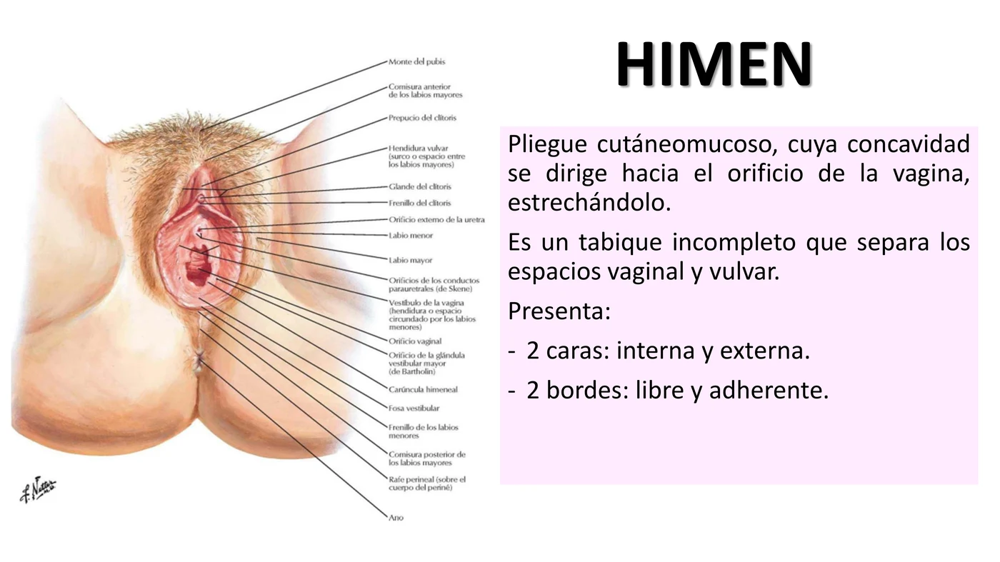
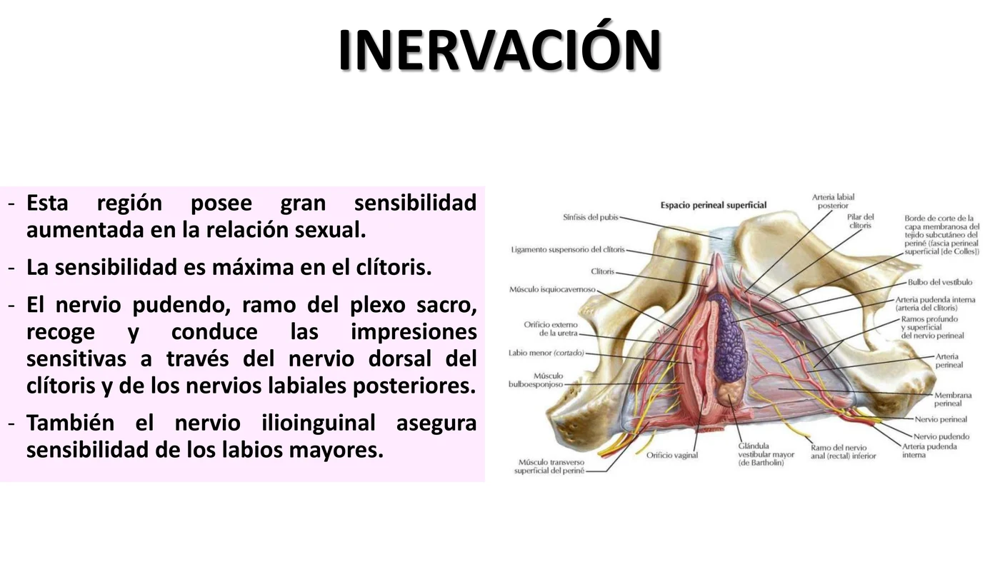
Vascularização depende de 2 territórios: pudendos internos (ramos da artéria ilíaca interna, para as formações eréteis e a glândula vestibular maior) e região inguinal (ramos da artéria pudenda externa, para as formações cutâneas e mucosas). O clitóris possui um sistema venoso dorsal profundo, comparável à veia dorsal do pênis.
Inervação: região de grande sensibilidade, aumentada na relação sexual, máxima no clitóris. O nervo pudendo (ramo do plexo sacro) recolhe e conduz as impressões sensitivas pelo nervo dorsal do clitóris e pelos nervos labiais posteriores. O nervo ilioinguinal também garante sensibilidade dos lábios maiores.
| Tema | Frequência |
|---|---|
| 4 ligamentos do ovário | 🔥🔥🔥🔥🔥 |
| 4 porções da trompa uterina | 🔥🔥🔥🔥🔥 |
| 3 camadas do útero | 🔥🔥🔥🔥🔥 |
| Peritônio uterino (intra x subperitoneal) | 🔥🔥🔥🔥 |
| Ligamento largo e seus conteúdos | 🔥🔥🔥🔥 |
| Vascularização uterina/ovariana (3 artérias do útero) | 🔥🔥🔥🔥 |
| Glândulas da vulva (Skene/Bartolino/Huguier) | 🔥🔥🔥 |
A fecundação do ovócito ocorre normalmente na ampola da trompa uterina — se o ovo não migra até o útero e implanta na própria trompa, é a gravidez ectópica mais comum.
O ovário, fixado por 4 ligamentos relativamente longos (suspensório, próprio, mesoovário), tem certa mobilidade — o que predispõe à torção, sobretudo quando aumentado por um cisto.
| Condição | Apresentação clássica |
|---|---|
| Cisto ovariano (folicular/corpo lúteo) | Geralmente assintomático; dor pélvica leve; achado incidental em US |
| Torção de ovário | Dor pélvica súbita, intensa, uni lateral, com náusea/vômito — emergência, pois compromete a irrigação (artéria ovárica) e pode levar à necrose |
O útero é mantido em posição pelos meios de fixação: peritônio, ligamentos redondos e retouterinos, inserção vaginal e, principalmente, o assoalho pélvico (diafragma pélvico).
O colo do útero é separado das paredes vaginais pelo fórnix da vagina, dividido em fórnix anterior, posterior e 2 laterais — o posterior é o mais profundo e relaciona-se com o fundo do saco retouterino (de Douglas).
As glândulas vestibulares maiores (de Bartolino) situam-se na parte posterolateral do orifício vaginal, com ductos abrindo-se na base dos lábios menores.
16 imagens — diagramas da cátedra cobrindo ovário, trompa uterina, útero, vagina e vulva. Toque em qualquer imagem pra abrir em tamanho grande (🔍 zoom).
22 rodadas de perguntas rápidas sobre ovário, trompa uterina, útero, vagina e vulva, 1 por vez, 60 segundos pra você responder mentalmente. A pergunta muda sozinha quando o tempo acaba (ou clica em "Já sei, próxima"). No final, você vê o gabarito completo de tudo.
O sistema guarda, no seu navegador, quais cards você já sabe bem e quais precisam voltar mais cedo — cada vez que você avalia um card, ele recalcula quando ele deve voltar.
18 questões cobrindo ovário, trompa uterina, útero, vagina e vulva. Escolhe uma alternativa, depois clica em "Ver comentário completo".